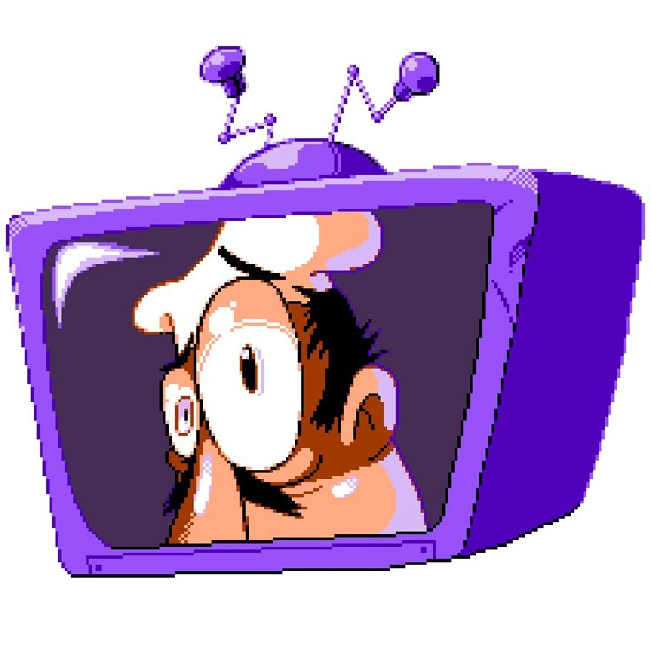

Esse não é meu primeiro documento html, mas mesmo assim estou muito !feliz (eu sei que a imagem ta muito grande, só me deu preguicinha de alterar o tamanho)
peppino goat olhando de forma deformada para você na tv.

um javascript (parenteses do peppino parte 2)
maluco, vc tem seila italico
AGORA VAI TER Q ESCREVER E ESCREVER ATÉ OS DEDOS CAIREM SÓ PARA COLOCAR NO MAXIMO UNS DOIS PARAGRAFOR PRA METER SEILA OQ NO TEXTO MAS DEFINIVAMENTE ISSO É POGGERS
OS POMBO CAGARO DE CIMA O POMBO MORREU
se vc deseja acessar um canal muito incrivel sobre mega man x, acesse o canal do kane tv
blud, só o cara q fez isso vai ver então neh... não tem como escolher seu quer ver a segunda pagina ou nao... seu paioso.
mano, só aperta aq